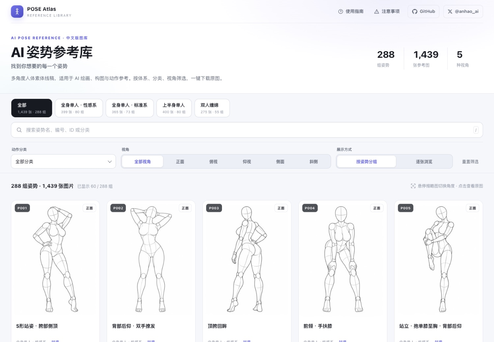
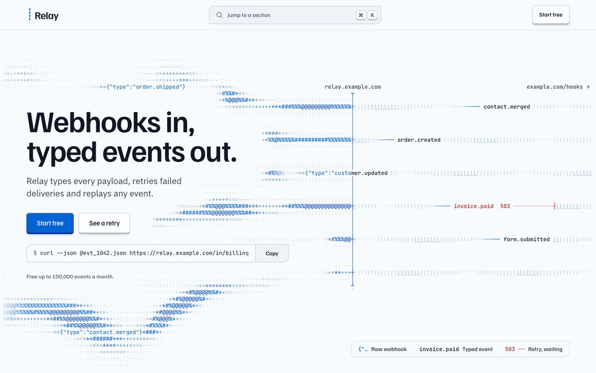

Edition 014 · Week of October 30, 2026
This week's 10
Design, discovery and the tools you didn't know you needed. Two design skills teach your AI real taste, while a GPU speed unlock and an AI tutoring platform show that the most useful tools solve problems you may not have known you had.
anhao/ai-pose-gallery-zhAI Pose Gallery
A free library of 1,439 body-pose reference images for AI art, organized by angle and category.


Nutlope/hallmarkHallmark
A skill that teaches your AI coding tool to spot and fix generic, AI-looking design.

pbakaus/impeccableImpeccable
A design vocabulary for your AI agent - steer with polish, review with critique, catch AI slop before it ships.
- #4LinkSwifthmjz100/LinkSwiftA browser script that gets full-speed downloads from eight Chinese cloud storage services.Use it yourself+9.3K stars this week
- #5DeepTutorHKUDS/DeepTutorAn AI tutor that reads your textbooks and explains them at your level - with follow-up questions.Use it yourself+7.5K stars this week
- #6Ziwei DoushuRenhuai123/ziwei-doushuAn open-source Chinese astrology chart engine based on classical texts.Use it yourself+3.8K stars this week
- #7GPU UnlockZagitta/gpu-unlockRemoves the speed limit NVIDIA puts on consumer graphics cards for AI work - up to 2x faster.Use it yourself12 days old · 13.3K stars
- #8DSH Free ModelEbony-Vinyl/dsh-our-free-modelA plugin that connects you to free AI model providers through one interface.Use it yourself36 days old · 52.1K stars
- #9Agent-ReachPanniantong/Agent-ReachGives your AI agent eyes to read Twitter, Reddit, YouTube and more - one tool, no API fees.Use it yourself+5.4K stars this week
- #10Superpowersobra/superpowersA skills framework that teaches AI coding agents to plan, test and debug like a careful senior engineer.Use it yourselfStill climbing · +14.9K stars this month
How this week was picked: 221 candidates from 4 of 6 sources (GitHub Trending, Trendshift, Hacker News, findarepo). skills.sh returned a 401 (leaderboard data retrieved via fallback for Claude Board update only). YouTube was not scanned (no pre-scan file for Oct 30). GitHub search found candidates only (not an independent source). 14 cleared all floors. Picks: 6 by score, 3 new this week (under 45 days), 1 still climbing (over 90 days). Every repo passed our safety check on Oct 30. Ebony-Vinyl/dsh-our-free-model settled PASS by routine (activity flag only - 40 watchers on 52K stars; suspicious star pattern noted as watch-out). No repos taken down this week from the re-check. Tips: none this week (data/tips.md empty).